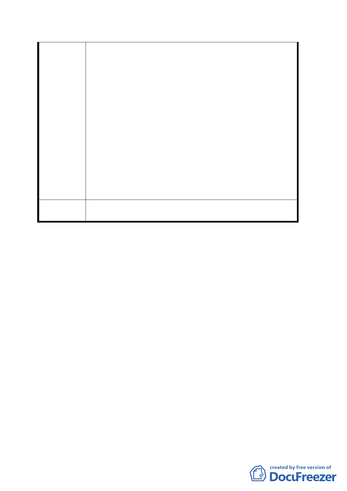

預算支應。
三、配合貴府捷運局推動「機場捷運」建設及創造 C1 用
地較大之開發效益，而將本局經管原已劃定為「一般
商業區」之 D1 用地（東半街廓）逕提都市計畫變更，
本局無法接受。
四、有關本主要計畫案-伍、其他第三款：『本案不適用「大
眾捷運系統工程使用土地上空或地下處理及審核辦
法」第 19 條第一項之規定』乙節，並未依原條文但書
敘明引用其他優惠辦法而須排除增加新建樓地板面積
之相關規定，貴府捷運局以自行適用之條款開發，嚴
重損及本局權益。
五、有關（Ｅ及Ｄ１區）請貴府依據行政院及交通部之指
示辦理。
六、請將本局應得之權益在貴我協商達成共識後併入都市
計畫整體規劃再辦理後續作業。
委 員 會 議 本案照案通過。附帶決議：請市府儘速與交通部協調本案
決 議 聯合開發之利益分配事宜。
討論事項三
案名：「配合臺北市捷運系統內湖線工程變更臺北市內湖區康寧
段三小段 180 地號土地第三種商業區（特）、第三種住宅
區為交通用地土地使用管制計畫案」內湖站第二出口用
地土地使用管制規定案
說明：
一、本件係市府捷運工程局以九十四年七月五日捷規字第○
九四三一七八七八○○號函送到會。
二、申請單位：臺北市政府捷運工程局。
三、說明理由及內容詳報告書。
決議：照案通過，同意基地西側得免依臺北市土地使用分區管
制規則第 89 條規定退縮建築。
七